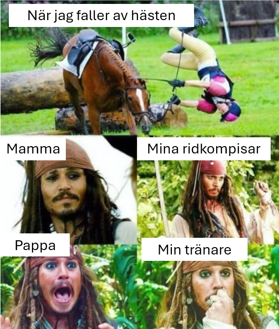

| Nyheter från Midnattssolens Westernryttare. Ser brevet konstigt ut? View this email in your browser | ||||

|
||||
|
||||
Sponsor för KM 2024 |
||||
Styrelsen informerar
Hösten och vintern har börjat anlända med sina frusna morgnar och kalla nätter. Det hindrar dock inte oss i styrelsen att arbeta vidare och göra aktiviteter för er medlemmar! Den 13 oktober är det nämligen klubbmästerskap! Jippi! Kom och ha roligt med oss denna dag och tävla om äran att bli klubbmästare i MSWR! (Wow!) Lockar inte tävlingsbanan? Oroa er inte, det finns alltid möjlighet att vara funktionär. Som funktionär i MSWR hjälper ni till att genomföra tävlingen och ingen tidigare erfarenhet behövs. Hör bara av er till styrelsens mejl om ni är intresserade. Vi välkomnar även er alla som bara vill komma och titta och heja på alla tävlande!
|
||||
 Nyheter från WRASWRAS (Western Riders Association of Sweden) är MSWR:s förbund och samlar alla westernföreningar i Sverige. På WRAS hemsida kan man läsa mer om organisationen och nyheter för Western Sverige. I mitten av augusti hölls en extrastämma för att fylla de tomma posterna i WRAS styrelse. MSWR deltog och önskar den nya ordförande Johanna Berggren samt de två nya ledamöterna Ingela Ynghagen och Malin Kleman varmt välkomna! Om man vill få en komplett presentation av styrelsen kan man kika in här. Bland annat vill vi stolt meddela att en MSWR:are, Sandra Jägare Lindvall, sitter i WRAS styrelse som vice ordförande! Nyhetsbrevets meme |